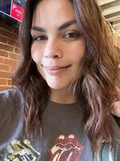

 Georgea Freitas Selfie - photo by Georgea Freitas
Personal background: Raised in Brazil, South America. Obtained a Petroleum Engineering degree from a renowned Brazilian college. Made the move to Charlotte, NC in 2019 and started studying English until transitioning to IT a year ago.
Professional background: Commenced my career administrative assistant back in Brazil. Presently, I am returning to education with the goal of becoming a Front-End developer.
Academic background: My initial academic achievement is a five-year degree in Petroleum Engineering from Brazil. Following my move to the USA, I obtained an English certification at CPCC in 2021.Presently, I am immersed in a two-year journey to become a Front-End developer and am participating with a scholarship on a 12 weeks Full-Stack coding bootcamp.
Background in this subject: I have always been interested in “making things prettier”. After discovering my passion for coding I knew I had to follow my passion and the path to become that professional I want to be, so taking this course is part of it and that is what got me to this class.
Primary Computer Platform: MacOS Ventura (2021)
Courses I'm Taking & Why:
WEB 114 - Web Development Tools: I wanted to deepen my web development knowledge.
CTS 115 - Info Sys Business Concepts: part of major requirements.
CSC 151 - part of major requirements.
Funny/Interesting item about yourself: I speak 4 languages.